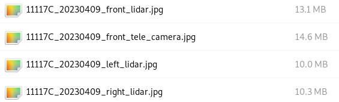

Projection results check tool v2.0
Parameter Description
'-v', '--vehicle', frame number
'-d', '--date', calibration date
'-P', '--positation', verify the data location, and divide in "/" (do not write "dynamic" and "bev verification" position)
'-a', '-aSAMPLE', whether the Asample car (yes or not)
'-m', '--mark', whether the test results (yes or not)
Precautions
Need to be installed in advance
$ pip install opencv-python
$ pip install Pillow
generate_check_image.py The script needs to be placed in the same level of the frame number, and ensure that the Project folder has generated a complete projection map
The calibration optimization only updates the calibration parameter, and the calibration parameter before the optimization adds the "_RAW" suffix, please re -projection, check and mark
Multi -frame projection images are saved under the Evaluation folder, single -frame labeling results are saved under the Project folder and add "_mrak" suffix
If there is a problem as a whole, there is no need to mark the local area. After being given to the Per Calibration optimization, then marked Per User to confirm (-m n skip the label, and directly save the multi-frame projection effect)
TR Attachments need to be uploaded:
Multi -frame projection images with problems
The non-MIAN/Front/LEFT/RIGHT-LIDAR single-frame projection image
xxtrinsic/flexible_all_log.txt
xxtrinsic/bev/0-2.jpg
Example
Digital mining (non-A-SAMPLE)
$ python3 generate_check_image.py -v 11142C -d 20230330 -p pos1/pos2/pos3/pos4/pos5 -a n -m y
Function vehicle (A-SAMPLE) $ python3 generate_check_image.py -v 11117C -d 20230409 -p pos1/pos2/pos3/pos4 -a y -m y

Detailed description
Hold down the left mouse button box to select the local area where there is a problem
Right -click to cancel the multiple box selection in history
The key roller in the mouse can be scaled, and the left button can be moved to move ( After shining, need at the same time Hold down the left mouse button and the mid -key box to select the part with problems with problems)
After the projection image is checked, ESC enters the next one
After all the inspection is completed, the multi -frame projection label result is automatically saved
legend